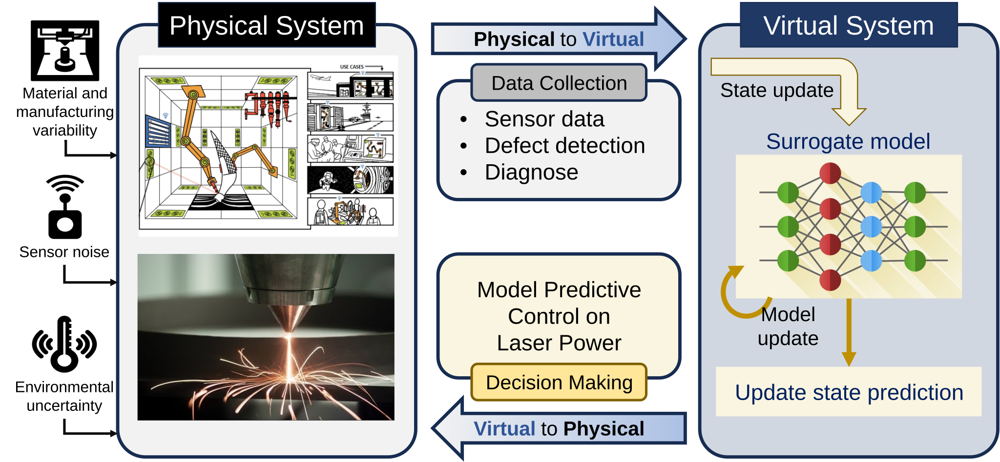

Uncertainty-Aware Real-Time Decision-Making in Digital Twins
Digital Twins are more than virtual replicas — they enable bi-directional interaction between a physical system and its digital counterpart. Integrating AI, uncertainty quantification, and real-time data, I develop methods for system design, performance optimization, and lifecycle management.
Read more →